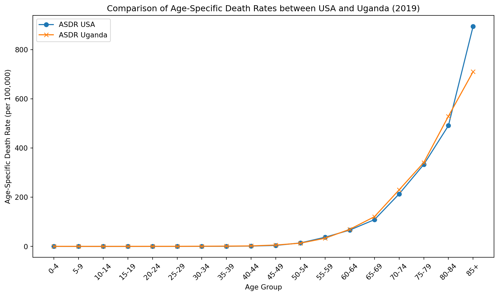

Data analysis exercise: Our World in Data Junior Data Scientist application
Author
Jonathan Jayes
Published
March 10, 2024
Purpose
This quarto document contains the code and analysis that calculates both the crude death rate and the age-standardized death rate for all ages in both the United States and Uganda for 2019 due to Chronic obstructive pulmonary disease (COPD).
Results
I find that despite the age-specific death rates being similar for the two countries, the crude death rate is much higher in the United States than in Uganda (57.2 vs 5.8 deaths per 100,000 people). This is due to the fact that the United States has a much older population than Uganda (as shown in Figure 2). The age-standardized death rate, which accounts for the differences in age structure between the two countries, is very similar for the USA and Uganda (28.4 vs 28.7 deaths per 100,000) – which makes sense because it is just a weighted average of the age-specific death rates.
Context
COPD is a type of obstructive lung disease characterized by long-term breathing problems and poor airflow.
The main cause of COPD, especially in developed countries, is tobacco smoking, while in developing areas, exposure to fumes from burning fuel for cooking and heating in poorly ventilated homes is a significant contributor.
As shown in the mermaid diagram below, to calculate the crude death rate, I first multiply the age-specific death rates by the population of each age group, sum the results, and then divide by the total population. I then multiply by 100,000 to get the rate per 100,000.
To calculate the age-standardized death rate, I multiply the age-specific death rates by the WHO world standard population and sum the results. I then divide by the total WHO world standard population.
The code is broken into functions that read, transform, and analyze the data. The analysis is then run, and the results are printed. Finally, the age-specific death rates and the population structure are plotted.
graph TD; ASDR[Age-Specific Death Rate - ASDR] -->|Aggregate Deaths and Population by Age| CDR[Crude Death Rate - CDR]; ASDR -->|Multiply Standard Population Weights by ASDR| SDR[Standardized Death Rate - SDR]; ASDR -.-> P_total[Population by age]; P_total -.-> CDR; ASDR -.-> P_std[Standard Population Distribution]; P_std -.-> SDR; classDef formula fill:#87CEEB,stroke:#333; class ASDR,CDR,SDR formula;
graph TD;
ASDR[Age-Specific Death Rate - ASDR] -->|Aggregate Deaths and Population by Age| CDR[Crude Death Rate - CDR];
ASDR -->|Multiply Standard Population Weights by ASDR| SDR[Standardized Death Rate - SDR];
ASDR -.-> P_total[Population by age];
P_total -.-> CDR;
ASDR -.-> P_std[Standard Population Distribution];
P_std -.-> SDR;
classDef formula fill:#87CEEB,stroke:#333;
class ASDR,CDR,SDR formula;
Flowchart showing the steps taken to calculate the crude death rate and the age-standardized death rate. Note that the green boxes indicate additional data. The solid lines indicate calculations
Analysis
# Import necessary librariesimport pandas as pdimport matplotlib.pyplot as pltimport numpy as npimport matplotlib.ticker as ticker
# Define functions to read, transform, and analyze the datadef read_and_prepare_data(filepath, sheet, skiprows):# Read the population data file, skip initial rows, and prepare initial DataFrame df = pd.read_excel(filepath, sheet_name=sheet, skiprows=skiprows) df.columns = df.columns.str.replace("*", "").str.replace(",", "").str.strip().str.lower().str.replace(" ", "_") df.rename(columns={"region_subregion_country_or_area": "country"}, inplace=True)return dfdef filter_and_transform_data(df):# Filter for USA and UGA, and then for the year 2019 df_filtered = df[(df["iso3_alpha-code"].isin(["USA", "UGA"])) & (df["year"] ==2019)]# Pivot longger and rename columns so that they are easier to work with id_vars = df_filtered.columns[:11] df_long = df_filtered.melt(id_vars=id_vars, var_name='age_group', value_name='population') df_long.rename(columns={'age_group': 'age_group_label'}, inplace=True)# Convert population and pivot wider to have separate columns for USA and UGA df_long['population'] = df_long['population'] *1000 df_long = df_long.pivot(index='age_group_label', columns='country', values='population').reset_index() df_long.rename(columns={'United States of America': 'population_usa', 'Uganda': 'population_uga'}, inplace=True)return df_longdef aggregate_and_reorder(df):# Aggregate and reorder based because we need to aggregate the top four age groups to just one df.loc[df['age_group_label'].isin(['85-89', '90-94', '95-99', '100+']), 'age_group_label'] ='85+' df = df.groupby('age_group_label').sum().reset_index()# Mapping in order to sort the age groups age_group_mapping = {'0-4': 0,'5-9': 1,'10-14': 2,'15-19': 3,'20-24': 4,'25-29': 5,'30-34': 6,'35-39': 7,'40-44': 8,'45-49': 9,'50-54': 10,'55-59': 11,'60-64': 12,'65-69': 13,'70-74': 14,'75-79': 15,'80-84': 16,'85+': 17 } df['age_group_index'] = df['age_group_label'].map(age_group_mapping) df.sort_values(by='age_group_index', inplace=True)return df
# Define functions to integrate additional data and calculate the death ratesdef integrate_additional_data(df_final):# Define additional datasets to merge with the population data age_specific_death_rates = {'Age group (years)': ['0-4', '5-9', '10-14', '15-19', '20-24', '25-29', '30-34', '35-39', '40-44', '45-49', '50-54', '55-59', '60-64', '65-69', '70-74', '75-79', '80-84', '85+'],'Death rate, United States, 2019': [0.04, 0.02, 0.02, 0.02, 0.06, 0.11, 0.29, 0.56, 1.42, 4.00, 14.13, 37.22, 66.48, 108.66, 213.10, 333.06, 491.10, 894.45],'Death rate, Uganda, 2019': [0.40, 0.17, 0.07, 0.23, 0.38, 0.40, 0.75, 1.11, 2.04, 5.51, 13.26, 33.25, 69.62, 120.78, 229.88, 341.06, 529.31, 710.40] } df_age_specific_death_rates = pd.DataFrame(age_specific_death_rates) df_age_specific_death_rates['age_group_index'] = df_age_specific_death_rates.index df_age_specific_death_rates.rename(columns={'Age group (years)': 'age_group_label', 'Death rate, United States, 2019': 'asdr_usa', 'Death rate, Uganda, 2019': 'asdr_uga'}, inplace=True) who_world_standard = {'age_group_label': ['0-4', '5-9', '10-14', '15-19', '20-24', '25-29', '30-34', '35-39', '40-44', '45-49', '50-54', '55-59', '60-64', '65-69', '70-74', '75-79', '80-84', '85+'],'who_world_standard_pop': [8.86, 8.69, 8.60, 8.47, 8.22, 7.93, 7.61, 7.15, 6.59, 6.04, 5.37, 4.55, 3.72, 2.96, 2.21, 1.52, 0.91, 0.63] } df_who_world_standard = pd.DataFrame(who_world_standard)# Perform merges merged_data = pd.merge(df_final, df_age_specific_death_rates, on=['age_group_label', 'age_group_index']) merged_data = pd.merge(merged_data, df_who_world_standard, on='age_group_label')return merged_datadef calculate_death_rates(merged_data):# Crude Death Rate calculations# Calculate the total deaths from the age-specific death rates and population# Divide the total deaths by the total population and multiply by 100,000 to get the crude death rate total_deaths_us = (merged_data['asdr_usa'] * merged_data['population_usa'] /100000).sum() total_population_us = merged_data['population_usa'].sum() crude_death_rate_us = (total_deaths_us / total_population_us) *100000 total_deaths_uganda = (merged_data['asdr_uga'] * merged_data['population_uga'] /100000).sum() total_population_uganda = merged_data['population_uga'].sum() crude_death_rate_uganda = (total_deaths_uganda / total_population_uganda) *100000# Age-Standardized Death Rate calculations# Calculate the standardized death rate for each country by multiplying the age-specific death rates by the WHO world standard population and summing the results standard_population_total = merged_data['who_world_standard_pop'].sum() standardized_death_rate_us = ((merged_data['asdr_usa'] * merged_data['who_world_standard_pop']).sum() / standard_population_total) standardized_death_rate_uganda = ((merged_data['asdr_uga'] * merged_data['who_world_standard_pop']).sum() / standard_population_total)# Round to one decimal place crude_death_rate_us =round(crude_death_rate_us, 1) crude_death_rate_uganda =round(crude_death_rate_uganda, 1) standardized_death_rate_us =round(standardized_death_rate_us, 1) standardized_death_rate_uganda =round(standardized_death_rate_uganda, 1)# Make a table with the results results = {'country': ['United States of America', 'Uganda'],'crude_death_rate': [crude_death_rate_us, crude_death_rate_uganda],'standardized_death_rate': [standardized_death_rate_us, standardized_death_rate_uganda] } df_results = pd.DataFrame(results)return df_results
# Run the analysisfilepath ="../data/owid/WPP2022_POP_F02_1_POPULATION_5-YEAR_AGE_GROUPS_BOTH_SEXES.xlsx"df = read_and_prepare_data(filepath, "Estimates", 16)df_transformed = filter_and_transform_data(df)df_final = aggregate_and_reorder(df_transformed)merged_data = integrate_additional_data(df_final)df_results = calculate_death_rates(merged_data)print(df_results)
country crude_death_rate standardized_death_rate
0 United States of America 57.2 28.4
1 Uganda 5.8 28.7
# Define functions to plot the seriesdef plot_age_specific_death_rates(merged_data): fig, ax = plt.subplots(figsize=(10, 6)) ax.plot(merged_data['age_group_label'], merged_data['asdr_usa'], label='ASDR USA', marker='o') ax.plot(merged_data['age_group_label'], merged_data['asdr_uga'], label='ASDR Uganda', marker='x') ax.set_xlabel('Age Group') ax.set_ylabel('Age-Specific Death Rate (per 100,000)') ax.set_title('Comparison of Age-Specific Death Rates between USA and Uganda (2019)') ax.legend() plt.xticks(rotation=45) plt.tight_layout() plt.show()def format_tick(value, _):"""Convert the tick value to a string indicating the number in thousands with a 'K' suffix, a space as a thousands separator, and no decimal places."""returnf'{value/1000:,.0f}K'def plot_population_structure_horizontal_dodged(merged_data):# Set the height of the bars bar_height =0.35# Calculate the positions of the bars on the y-axis index = np.arange(len(merged_data['age_group_label'])) fig, ax = plt.subplots(figsize=(10, 8))# Plotting both sets of bars side by side ax.barh(index - bar_height/2, merged_data['population_usa'], height=bar_height, label='USA Population', alpha=0.5) ax.barh(index + bar_height/2, merged_data['population_uga'], height=bar_height, label='Uganda Population', alpha=0.5)# Adding labels, title, and legend ax.set_ylabel('Age Group', fontsize=12) ax.set_xlabel('Population (in thousands)', fontsize=12) ax.set_title('Population Structure Comparison between USA and Uganda (2019)', fontsize=14) ax.set_yticks(index) ax.set_yticklabels(merged_data['age_group_label'], fontsize=10) ax.legend()# Formatting the x-axis labels as numbers in thousands ax.xaxis.set_major_formatter(ticker.FuncFormatter(format_tick)) plt.tight_layout() plt.show()
Figure 1 shows that the age-specific death rates for the two countries are quite similar, and Figure 2 shows the population structure for the two countries. Uganda has a much younger population than the United States, which is why the crude death rate is much higher in the United States than in Uganda.
plot_age_specific_death_rates(merged_data)

Figure 1: Comparison of Age-Specific Death Rates between USA and Uganda (2019) showing that death rates are much greater among older age groups in both countries.
Figure 2: Comparison of Population Structure in USA and Uganda (2019)
Footnotes
Specifically, we need the file containing “Total population (both sexes combined) by five-year age group. De facto population as of 1 July of the year indicated classified by five-year age groups (0-4, 5-9, 10-14, …, 95-99, 100+). Data are presented in thousands.”↩︎